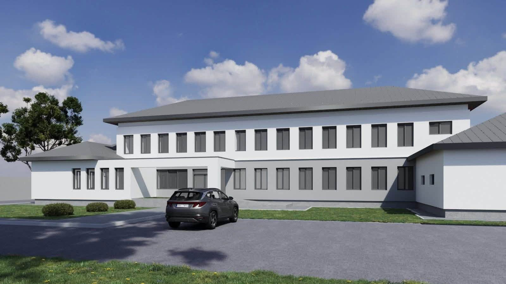
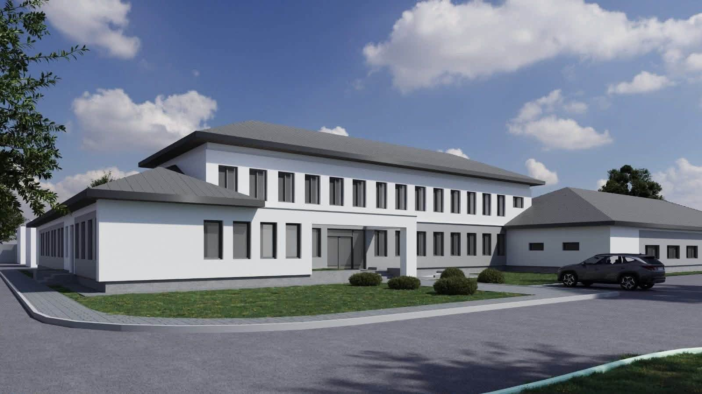

Un nou proiect depus de Consiliul Județean Mehedinți a intrat în etapa de contractare, în cadrul Programului Regional Sud-Vest Oltenia 2021-2027. Este vorba despre proiectul „Reabilitare și dotare Stație de Salvare - Pavilion Administrativ", care vizează modernizarea clădirii în care își desfășoară activitatea Serviciul Județean de Ambulanță Mehedinți.
Valoarea totală a investiției este de 15.933.318,94 lei, iar proiectul prevede lucrări de consolidare și reabilitare a clădirii, modernizarea instalațiilor, creșterea eficienței energetice, precum și dotarea acesteia.
Totodată, vor fi realizate lucrări de accesibilizare, vor fi amenajate aleile și trotuarele din incintă și vor fi create noi locuri de parcare, astfel încât personalul Serviciului Județean de Ambulanță Mehedinți să își desfășoare activitatea în condiții moderne, sigure și eficiente.

Deși Serviciul Județean de Ambulanță Mehedinți nu se află în subordinea Consiliului Județean Mehedinți, acesta deservește întreg județul, iar modernizarea acestui imobil reprezintă o investiție necesară pentru îmbunătățirea condițiilor în care sunt asigurate serviciile medicale de urgență.
„Investițiile în infrastructura medicală rămân o prioritate pentru Consiliul Județean Mehedinți, iar prin accesarea fondurilor europene continuăm să modernizăm infrastructura și să susținem dezvoltarea serviciilor medicale din județ", transmite conducerea Consiliului Județean Mehedinți.